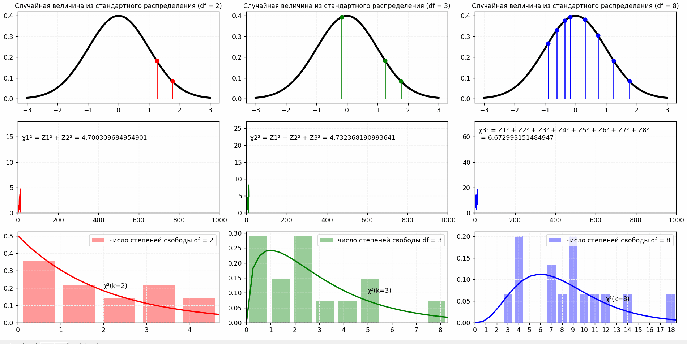

Kāpēc cilvēki bieži izvēlas skaitli 7 un vai pastāv īsta nejaušība?
Nejaušība tradicionāli tiek uztverta kā likumsakarību trūkums. Tomēr mūsdienu zinātnē šis jēdziens ir daudz sarežģītāks un daudzslāņaināks. Tas aptver tādas jomas kā kognitīvā psiholoģija, klasiskā mehānika, varbūtību teorija un kvantu fizika.
Formāli nejaušību var definēt kā procesu, kura rezultātu nav iespējams precīzi paredzēt pat ar pilnīgu informāciju par sistēmu. Tomēr šī definīcija bieži ir nepietiekama, analizējot reālas sistēmas.
Dažādos pētījumos (tostarp 20. gadsimta 70. gados) dalībniekiem tika lūgts izvēlēties “nejaušu” skaitli noteiktā intervālā (piemēram, no 1 līdz 10).
Rezultāti parādīja nevienmērīgu sadalījumu:
pie patiesas nejaušības būtu

Tas norāda uz sistemātisku novirzi no vienmērīga sadalījuma.
Patiesa nejaušība parādās tikai kvantu līmenī.
Cilvēka smadzenes cenšas izvairīties no:
* galējām vērtībām (1, 10)
* simetriskām struktūrā
* atkārtojošiem modeļiem
“Psiholoģisko nejaušību” var aprakstīt ar funkciju:
kur:
n — izvēlētais skaitlis
C — кkultūras faktori
B — kognitīvās novirzes
Tādējādi izvēle nav patiesi nejauša, bet gan pseido nejaušs process ar izteiktu nobīdi.
Monētas mešana bieži tiek uzskatīta par nejaušības piemēru.
Tomēr fiziski tā ir determinēta sistēma.
Monētas kustību var aprakstīt ar vienādojumiem:
где:
F — spēks
τ — spēka moments
I — inerces moment
α — leņķiskais paātrinājums
Gala rezultāts ir atkarīgs no sākuma nosacījumiem:
Ja visi parametri ir zināmi, rezultātu var paredzēt.
Klasiskā mehānika apgalvo:
To var izteikt šādi:
kur:
X — sākuma stāvoklis
X(t) — stāvoklis laikā t
Tādējādi nejaušība makrolīmenī ir nepilnīgu zināšanu sekas, nevis fundamentāla īpašībaо.
Компьютеры не способны генерировать истинную случайность без внешнего источника. Вместо этого используются псевдослучайные генераторы
Пример — линейный конгруэнтный генератор:
где:
X — текущее значение
a,c,m — параметры генератора
Нажми, чтобы сгенерировать псевдослучайное число:
периодичность
зависимость от начального значения (seed)
воспроизводимость
Формально:
Это означает, что при одинаковом seed последовательность полностью повторяется.
игры
моделирование (Monte Carlo)
криптография (с дополнительными источниками энтропии)
В квантовой механике действует принцип:
Это означает невозможность точного одновременного измерения координаты и импульса.
Состояние системы описывается волновой функцией:
Вероятность нахождения частицы:
При измерении происходит
результат не предопределён, а выбирается случайно согласно распределению вероятностей.
В отличие от классических систем:
результат принципиально непредсказуем, даже при полном знании системы.
Случайность не является однородным понятием. Она проявляется по-разному в зависимости от уровня рассмотрения:
в человеческом мышлении она искажена когнитивными механизмами
в классической физике она является иллюзией, вызванной сложностью системы
в вычислительных системах она моделируется алгоритмически
в квантовой механике она является фундаментальным свойством природы
Таким образом, можно сделать общий вывод:
Полное понимание случайности требует междисциплинарного подхода и остаётся одной из ключевых проблем современной науки.